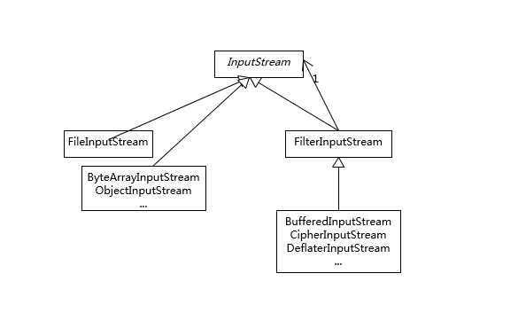

- 00 开篇词 以面试题为切入点，有效提升你的Java内功.md
- 01 谈谈你对Java平台的理解？.md
- 02 Exception和Error有什么区别？.md
- 03 谈谈final、finally、 finalize有什么不同？.md
- 04 强引用、软引用、弱引用、幻象引用有什么区别？.md
- 05 String、StringBuffer、StringBuilder有什么区别？.md
- 06 动态代理是基于什么原理？.md
- 07 int和Integer有什么区别？.md
- 08 对比Vector、ArrayList、LinkedList有何区别？.md
- 09 对比Hashtable、HashMap、TreeMap有什么不同？.md
- 10 如何保证集合是线程安全的_ ConcurrentHashMap如何实现高效地线程安全？.md
- 11 Java提供了哪些IO方式？ NIO如何实现多路复用？.md
- 12 Java有几种文件拷贝方式？哪一种最高效？.md
- 13 谈谈接口和抽象类有什么区别？.md
- 14 谈谈你知道的设计模式？.md
- 15 synchronized和ReentrantLock有什么区别呢？.md
- 16 synchronized底层如何实现？什么是锁的升级、降级？.md
- 17 一个线程两次调用start()方法会出现什么情况？.md
- 18 什么情况下Java程序会产生死锁？如何定位、修复？.md
- 19 Java并发包提供了哪些并发工具类？.md
- 20 并发包中的ConcurrentLinkedQueue和LinkedBlockingQueue有什么区别？.md
- 21 Java并发类库提供的线程池有哪几种？ 分别有什么特点？.md
- 22 AtomicInteger底层实现原理是什么？如何在自己的产品代码中应用CAS操作？.md
- 23 请介绍类加载过程，什么是双亲委派模型？.md
- 24 有哪些方法可以在运行时动态生成一个Java类？.md
- 25 谈谈JVM内存区域的划分，哪些区域可能发生OutOfMemoryError_.md
- 26 如何监控和诊断JVM堆内和堆外内存使用？.md
- 27 Java常见的垃圾收集器有哪些？.md
- 28 谈谈你的GC调优思路_.md
- 29 Java内存模型中的happen-before是什么？.md
- 30 Java程序运行在Docker等容器环境有哪些新问题？.md
- 31 你了解Java应用开发中的注入攻击吗？.md
- 32 如何写出安全的Java代码？.md
- 33 后台服务出现明显“变慢”，谈谈你的诊断思路？.md
- 34 有人说“Lambda能让Java程序慢30倍”，你怎么看？.md
- 35 JVM优化Java代码时都做了什么？.md
- 36 谈谈MySQL支持的事务隔离级别，以及悲观锁和乐观锁的原理和应用场景？.md
- 37 谈谈Spring Bean的生命周期和作用域？.md
- 38 对比Java标准NIO类库，你知道Netty是如何实现更高性能的吗？.md
- 39 谈谈常用的分布式ID的设计方案？Snowflake是否受冬令时切换影响？.md
- 周末福利 谈谈我对Java学习和面试的看法.md
- 结束语 技术没有终点.md
14 谈谈你知道的设计模式？
设计模式是人们为软件开发中相同表征的问题，抽象出的可重复利用的解决方案。在某种程度上，设计模式已经代表了一些特定情况的最佳实践，同时也起到了软件工程师之间沟通的“行话”的作用。理解和掌握典型的设计模式，有利于我们提高沟通、设计的效率和质量。
今天我要问你的问题是，谈谈你知道的设计模式？请手动实现单例模式，Spring等框架中使用了哪些模式？
典型回答
大致按照模式的应用目标分类，设计模式可以分为创建型模式、结构型模式和行为型模式。
创建型模式，是对对象创建过程的各种问题和解决方案的总结，包括各种工厂模式（Factory、Abstract Factory）、单例模式（Singleton）、构建器模式（Builder）、原型模式（ProtoType）。
结构型模式，是针对软件设计结构的总结，关注于类、对象继承、组合方式的实践经验。常见的结构型模式，包括桥接模式（Bridge）、适配器模式（Adapter）、装饰者模式（Decorator）、代理模式（Proxy）、组合模式（Composite）、外观模式（Facade）、享元模式（Flyweight）等。
行为型模式，是从类或对象之间交互、职责划分等角度总结的模式。比较常见的行为型模式有策略模式（Strategy）、解释器模式（Interpreter）、命令模式（Command）、观察者模式（Observer）、迭代器模式（Iterator）、模板方法模式（Template Method）、访问者模式（Visitor）。
考点分析
这个问题主要是考察你对设计模式的了解和掌握程度，更多相关内容你可以参考：https://en.wikipedia.org/wiki/Design_Patterns。
我建议可以在回答时适当地举些例子，更加清晰地说明典型模式到底是什么样子，典型使用场景是怎样的。这里举个Java基础类库中的例子供你参考。
首先，[专栏第11讲]刚介绍过IO框架，我们知道InputStream是一个抽象类，标准类库中提供了FileInputStream、ByteArrayInputStream等各种不同的子类，分别从不同角度对InputStream进行了功能扩展，这是典型的装饰器模式应用案例。
识别装饰器模式，可以通过识别类设计特征来进行判断，也就是其类构造函数以相同的抽象类或者接口为输入参数。
因为装饰器模式本质上是包装同类型实例，我们对目标对象的调用，往往会通过包装类覆盖过的方法，迂回调用被包装的实例，这就可以很自然地实现增加额外逻辑的目的，也就是所谓的“装饰”。
例如，BufferedInputStream经过包装，为输入流过程增加缓存，类似这种装饰器还可以多次嵌套，不断地增加不同层次的功能。
public BufferedInputStream(InputStream in)
我在下面的类图里，简单总结了InputStream的装饰模式实践。

接下来再看第二个例子。创建型模式尤其是工厂模式，在我们的代码中随处可见，我举个相对不同的API设计实践。比如，JDK最新版本中 HTTP/2 Client API，下面这个创建HttpRequest的过程，就是典型的构建器模式（Builder），通常会被实现成fluent风格的API，也有人叫它方法链。
HttpRequest request = HttpRequest.newBuilder(new URI(uri))
.header(headerAlice, valueAlice)
.headers(headerBob, value1Bob,
headerCarl, valueCarl,
headerBob, value2Bob)
.GET()
.build();
使用构建器模式，可以比较优雅地解决构建复杂对象的麻烦，这里的“复杂”是指类似需要输入的参数组合较多，如果用构造函数，我们往往需要为每一种可能的输入参数组合实现相应的构造函数，一系列复杂的构造函数会让代码阅读性和可维护性变得很差。
上面的分析也进一步反映了创建型模式的初衷，即，将对象创建过程单独抽象出来，从结构上把对象使用逻辑和创建逻辑相互独立，隐藏对象实例的细节，进而为使用者实现了更加规范、统一的逻辑。
更进一步进行设计模式考察，面试官可能会：
希望你写一个典型的设计模式实现。这虽然看似简单，但即使是最简单的单例，也能够综合考察代码基本功。
考察典型的设计模式使用，尤其是结合标准库或者主流开源框架，考察你对业界良好实践的掌握程度。
在面试时如果恰好问到你不熟悉的模式，你可以稍微引导一下，比如介绍你在产品中使用了什么自己相对熟悉的模式，试图解决什么问题，它们的优点和缺点等。
下面，我会针对前面两点，结合代码实例进行分析。
知识扩展
我们来实现一个日常非常熟悉的单例设计模式。看起来似乎很简单，那么下面这个样例符合基本需求吗？
public class Singleton {
private static Singleton instance = new Singleton();
public static Singleton getInstance() {
return instance;
}
}
是不是总感觉缺了点什么？原来，Java会自动为没有明确声明构造函数的类，定义一个public的无参数的构造函数，所以上面的例子并不能保证额外的对象不被创建出来，别人完全可以直接“new Singleton()”，那我们应该怎么处理呢？
不错，可以为单例定义一个private的构造函数（也有建议声明为枚举，这是有争议的，我个人不建议选择相对复杂的枚举，毕竟日常开发不是学术研究）。这样还有什么改进的余地吗？
[专栏第10讲]介绍ConcurrentHashMap时，提到过标准类库中很多地方使用懒加载（lazy-load），改善初始内存开销，单例同样适用，下面是修正后的改进版本。
public class Singleton {
private static Singleton instance;
private Singleton() {
}
public static Singleton getInstance() {
if (instance == null) {
instance = new Singleton();
}
return instance;
}
}
这个实现在单线程环境不存在问题，但是如果处于并发场景，就需要考虑线程安全，最熟悉的就莫过于“双检锁”，其要点在于：
这里的volatile能够提供可见性，以及保证getInstance返回的是初始化完全的对象。
在同步之前进行null检查，以尽量避免进入相对昂贵的同步块。
直接在class级别进行同步，保证线程安全的类方法调用。
public class Singleton {
private static volatile Singleton singleton = null;
private Singleton() {
}
public static Singleton getSingleton() {
if (singleton == null) { // 尽量避免重复进入同步块
synchronized (Singleton.class) { // 同步.class，意味着对同步类方法调用
if (singleton == null) {
singleton = new Singleton();
}
}
}
return singleton;
}
}
在这段代码中，争论较多的是volatile修饰静态变量，当Singleton类本身有多个成员变量时，需要保证初始化过程完成后，才能被get到。
在现代Java中，内存排序模型（JMM）已经非常完善，通过volatile的write或者read，能保证所谓的happen-before，也就是避免常被提到的指令重排。换句话说，构造对象的store指令能够被保证一定在volatile read之前。
当然，也有一些人推荐利用内部类持有静态对象的方式实现，其理论依据是对象初始化过程中隐含的初始化锁（有兴趣的话你可以参考jls-12.4.2 中对LC的说明），这种和前面的双检锁实现都能保证线程安全，不过语法稍显晦涩，未必有特别的优势。
public class Singleton {
private Singleton(){}
public static Singleton getSingleton(){
return Holder.singleton;
}
private static class Holder {
private static Singleton singleton = new Singleton();
}
}
所以，可以看出，即使是看似最简单的单例模式，在增加各种高标准需求之后，同样需要非常多的实现考量。
上面是比较学究的考察，其实实践中未必需要如此复杂，如果我们看Java核心类库自己的单例实现，比如java.lang.Runtime，你会发现：
它并没使用复杂的双检锁之类。
静态实例被声明为final，这是被通常实践忽略的，一定程度保证了实例不被篡改（[专栏第6讲]介绍过，反射之类可以绕过私有访问限制），也有有限的保证执行顺序的语义。
private static final Runtime currentRuntime = new Runtime();
private static Version version;
// …
public static Runtime getRuntime() {
return currentRuntime;
}
/** Don't let anyone else instantiate this class */
private Runtime() {}
前面说了不少代码实践，下面一起来简要看看主流开源框架，如Spring等如何在API设计中使用设计模式。你至少要有个大体的印象，如：
BeanFactory和ApplicationContext应用了工厂模式。
在Bean的创建中，Spring也为不同scope定义的对象，提供了单例和原型等模式实现。
我在[专栏第6讲]介绍的AOP领域则是使用了代理模式、装饰器模式、适配器模式等。
各种事件监听器，是观察者模式的典型应用。
类似JdbcTemplate等则是应用了模板模式。
今天，我与你回顾了设计模式的分类和主要类型，并从Java核心类库、开源框架等不同角度分析了其采用的模式，并结合单例的不同实现，分析了如何实现符合线程安全等需求的单例，希望可以对你的工程实践有所帮助。另外，我想最后补充的是，设计模式也不是银弹，要避免滥用或者过度设计。
一课一练
关于设计模式你做到心中有数了吗？你可以思考下，在业务代码中，经常发现大量XXFacade，外观模式是解决什么问题？适用于什么场景？
请你在留言区写写你对这个问题的思考，我会选出经过认真思考的留言，送给你一份学习鼓励金，欢迎你与我一起讨论。
你的朋友是不是也在准备面试呢？你可以“请朋友读”，把今天的题目分享给好友，或许你能帮到他。
© 2019 - 2023 Liangliang Lee. Powered by gin and hexo-theme-book.